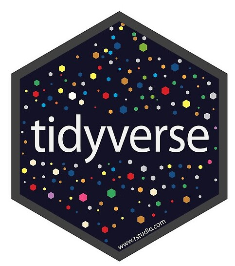

[1] "Isto é uma string"Eric Scopinho
Expressão Regular é uma sequência de caracteres que especificam um padrão de busca em uma string (cadeia de caracteres.
No R, você escreve uma expressão regular como uma string, ou seja, uma sequência de caracteres entre aspas simples ’ ou duplas “.
Alguns caracteres de uma expressão regular não podem ser representados diretamente como uma string no R. Estes são conhecidos como caracteres especiais e são uma sequência de caracteres que tem um significado específico.
Devido a isto, sempre que aparecer uma barra invertida ( \ ) em uma expressão regular, você deve digitar duas barras ( \\ ) na strings da expressão.
Por exemplo:
| Caracteres Especiais | Representa |
|---|---|
| \\ | \ |
| \” | ” |
| \? | ? |
Dica
Para obter a lista completa, digite ? “’”.
A função str_extract() (pacote stringr) aceita uma expressão regular como argumento.
Iremos definir nossa expressão regular (padrão de busca) como a a letra “a”.
Desta forma, se passarmos para a função str_extract() a string “Banana” e o padrão “a”, ele deve retornar a letra “a”, pois a string Banana possui a letra “a”.
Por outro lado, se passarmos a string “Fig” com o mesmo padrão de busca, teremos NA como retorno, pois a string “Fig” não possui a letra “a”.
Dica
O pacte stringr, possui diversas funções para extração, detecção, remoção e substituição de strings que aceitam regex. Em geral elas comçam com str_*. Para maiores informações digite: ?stringr
Para facilitar o entendimento, utilizaremos uma string com letras maiúsculas, minúsculas, símbolos e números:
Vamos mostrar como usar a tabela abaixo com alguns exemplos. Para isso, iremos usar a string criada anteriormente chamada “Str_Teste”.
| String Regex no R | Busca por |
|---|---|
| a | a (etc.) |
| \\. | . |
| \\! | \! |
| \\? | \? |
| \\\\ | \\ |
| \\( | \( |
| \\) | \) |
| \\{ | \{ |
| \\} | \} |
| \\n | nova linha (ENTER) |
| \\t | TAB |
| \\s | qualquer caractere em branco |
| \\d | qualquer digito |
| \\w | qualquer letra |
| \\b | barra de espaço |
| [:digit:] | digitos |
| [:alpha:] | letras |
| [:lower:] | letras minúsculas |
| [:upper:] | letras maiúsculas |
| [:alnum:] | letras e números |
| [:punct:] | pontuação |
| [:graph:] | letras, números e pontuação |
| [:space:] | qualquer espaço em branco |
| [:blank:] | espaço em branco e barra de espaço (mas não nova linha) |
| . | qualquer caractere exceto nova linha (ENTER) |
Vamos buscar em nossa string de teste (Str_Teste) a letra minúscula “a”.
Na coluna da tabela anterior chamada String, encontramos o que devemos digitar para construir o padrão de busca. Neste caso, seria “a”.
Se usarmos a função str_view_all() (pacote stringr) passando nossa “Str_Teste” e o padrão de busca “a”, observamos que teremos marcado apenas a letra “a” na string. Isto significa que o padrão de busca foi encontrado na string.
Vamos buscar agora pelo padrão do símbolo de ponto de interrogação “?”. Similar ao exemplo anterior, vemos que apenas o ponto de interrogação foi encontrado.
Vamos criar agora um padrão que busque por todos os digitos em nossa string.
Dica
Para buscarmos pelo inverso do caso anterior, ou seja, todos os caracteres que NÃO são digitos, usamos a letra “D” maiúscula. Isto é válido também para os casos de “\\S” e “\\W” que seriam o inverso de “\\s” e “\\w” respectivamente.
Vamos criar agora um padrão que busque por todos os digitos e letras em nossa string.
Agora que já saber como criar padrões de busca para identificar diversos tipos de caracteres, veremos como difinir a quantidade desses caracteres em nosso padrão. Veja a tabela abaixo:
| Regex | Busca |
|---|---|
| ? | Zero ou um |
| * | Zero ou mais |
| + | Um ou mais |
| {n} | Exatamente n |
| {n,} | n ou mais |
| {n,m} | Entre n e m |
Vamos ver como utilizamos estes quantificadores juntamente com os caracteres especiais vistos anteriormente.
Para os exemplos a seguir utilizaremos a seguinte string de teste:
Str_Teste_2 = “.a.aa.aaa”
Para a maioria dos exemplos utilizaremos as bases de dados frutas que será criada a seguir:
Buscando na string de teste “Str_Teste_2” a letra “a” ZERO ou UMA vez, usando a função str_view_all():
Neste caso, todas as vezes que a funções encontrar a letra “a” zero ou uma vez, elá irá marcar.
Se usarmos a função str_view() ela irá utilizar o padrão apenas até o primeiro encontro e depois irá parar a busca
Observe que a busca para logo no primeiro caractere, pois estamos buscando pela letra “a” ZERO ou mais vezes.
Agora vamos iremos buscar pela letra “a” UMA ou MAIS vezes, porém iremos utilizar a função str_view() ou invés da str_view_all(), parando a busca assim que o primeiro encontro ocorra:
Neste exemplo, queremos criar um padrão de busca pela letra “a”, mas que ela ocorra DUAS a TRÊS vezes.
Veja que ele localizou apenas as duas letras “aa” e não marcou as letras “aaa”. Isto é porque utilizamos a função str_view(), que parou a busca assim que a primeiro encontro ocorreu. Se quisermos continuar a busca, devemos utilizar a função str_view_all().
Neste exemplo, usaremos a tabela frutas, criada anteriormente.
Digamos que precisamos extrair apenas os numeros da coluna “nova_string”. E colocá-los em uma nova coluna chamada “numeros”.
Passo 1: Usar a função str_extract() com um padrão que encontre um número de 0 até 9, seguido por um ou mais “qualquer caractere”. Depois outro número de 0 até 9. Este padrão irá encontrar padrões como “1_1” ou “2_2”.
Passo 2: Usar um outro padrão [:punct:] na função str_remove() para remover a pontuação.
Até aqui, utilizamos os caracteres especiais e sabemos como localizá-los em diversas quantidades. Mas em muitos casos precisamos organizá-los de forma lógica, possibilitando utilizá-los em combinações mais flexíveis. Para isto, utilizamos os símbolos de alternadores:
| Regex | Busca |
|---|---|
| | | OU |
| [ ] | Um dos |
| [^ ] | Tudo exceto |
| [ - ] | Range |
Para os exemplos a seguir utilizaremos a seguinte string de teste: Str_Teste_3 = “abcde”
Digamos que desejamos criar um padrão que busque pela letras “ab” OU a letra “d”, para isto podemos usar:
Digamos que desejamos criar um padrão que busque qualquer um dos caracteres “abe”, para isto podemos usar:
Digamos que desejamos criar um padrão que busque qualquer um range de letras entre as letras “a” até a “c”, para isto podemos usar:
Neste exemplo, usaremos novamente a tabela frutas.
Digamos que precisamos filtrar nesta tabela, apenas as frutas que possuem nomes compostos, ou seja, separados por espaço ou uma pontuação (ex “-”).
Podemos usar a função filter() passando o resultado da função str_detect() junto com um padrão. Há diversas maneiras de construir este padrão. Aqui optamos por buscar por caracteres alfa-numéricos (letras e números) e usamos o alternador [^ ] para negar tais caracteres. Portanto, iremos identificar se a string NÃO possui letras ou números.
Expressões Regulares (Regex) no R